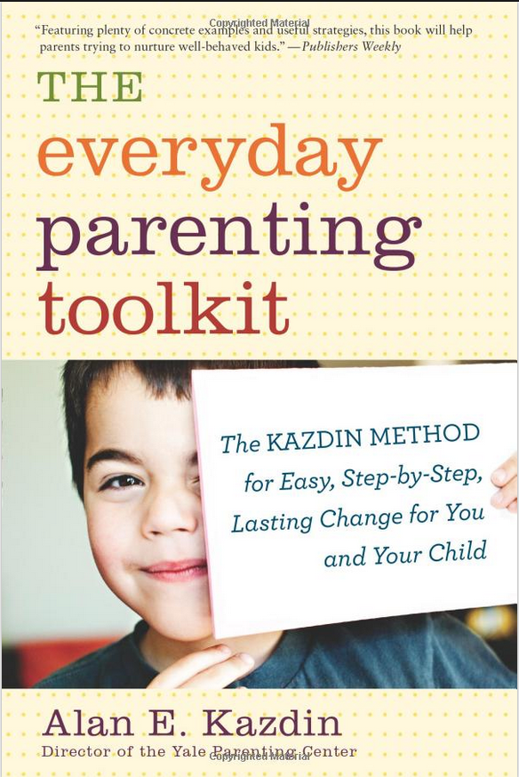
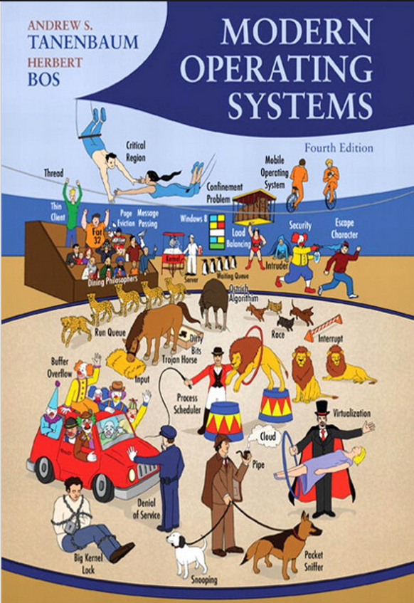
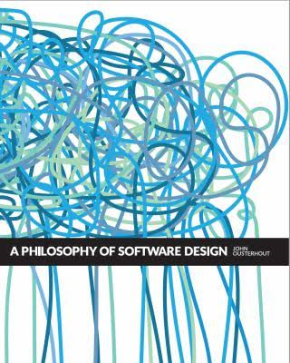
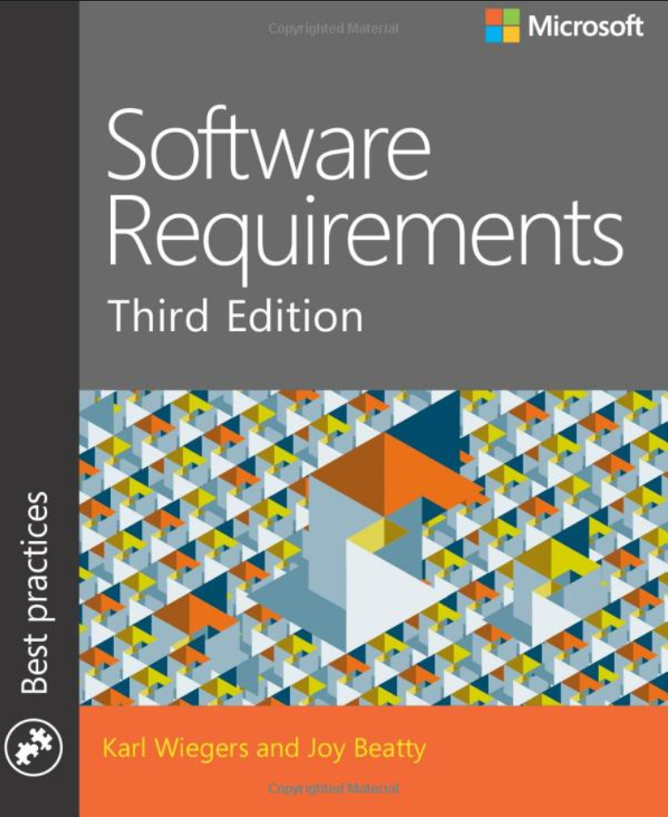
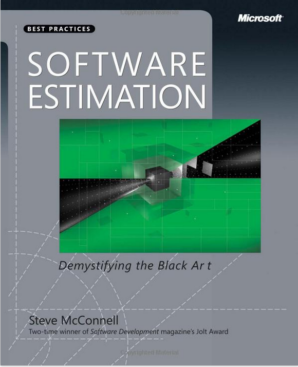
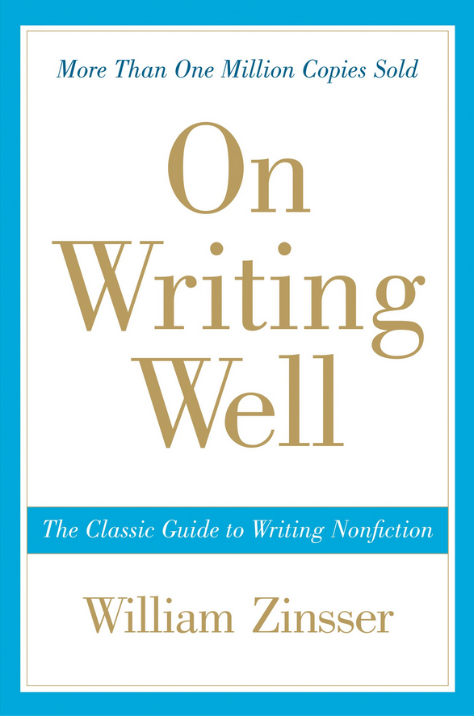

Books
I read books. They inspire and force me to find a quiet place and dedicate time into them. It does pay off. Here you'll find some of my recommendations.
Facts and Fallacies of Software Engineering — Robert L. Glass
A book with a series of commonly ommited facts and commonly commited fallacies in the software engineering industry. Among other things, you'll learn:
- why you should always aim at hiring the best programmers for your project,
- why very often it's not worth building reusable components,
- that unstable requirements and poor estimations are the most common causes of a runaway project,
- that there is no data demonstrating that "given enough eyeballs, all bugs are shallow" is true.
What's important, every fact and fallacy is backed up by refferred whitepapers. So it's not a book written by an enlightened self-made programming guru - it's a summary of the collective research in IT industry.
The Everyday Parenting Toolkit: The Kazdin Method for Easy, Step-by-Step, Lasting Change for You and Your Child — Alan E. Kazdin

The only book I've read about rearing children, so far. It presents author's own ABC method that is used to change child behavior. What does that mean? For example, let's say you have a problem because your little one doesn't clean his teeth. This book will teach you effective, science-based method that you can apply to make cleaning teeth happening. And the same method you can apply to many other problems that you and your children will encounter. It will also teach you why punishments are not effective, why you shouldn't repeat yourself over and over, why explaining things may not work, why you can't spoil your kid by giving him praises and many others. There is also
related course on Coursera.
Developing Management Skills — David Whetten and Kim Cameron
Pretty demanding and time-consuming management book. Prepare to spend a couple of months on it. This isn't an easy ready, but it's so comprehensive and so damn good... Basically it gives you a set of tools and models for you everyday work as a manager. Everything is pretty well backed up by liteally hundreds of references. A lot of psychology, DOs, DONTs, fallacies, examples, stories. Every manager should read it and everyone working with others will benefit from it.
Modern Operating Systems — Andrew Tanenbaum and Herbert Bos

This book I would recommend to everyone who is involved in complex applications design. I have read it after my graduation, it has been a long journey reading it but and I don't regret any single hour spend on it.
One might ask - "why learning operating systems?" The reason is that operating systems are hosts for your applications (assuming you're not writing bare-metal software). By knowing all the basics how do they work, you will know how to write code that is really performant. Or cheap in terms of running in cloud resources. Also, I enjoyed to read how complex beasts operating systems in the modern world actually are. Dozens of problems that are explained in the book were feeling close to me but on a different level - for example, instead of thinking about CPU L1 vs L2 cache, I had to worry about in-proc vs Redis performance in one of my projects. There are a lot of analogies between operating systems and service-oriented-architecture (microservices) that I could only find by reading this book.
A Philosophy of Software Design — John Ousterhout

A great title about programming written by the creator of Tcl language. The book focuses around designing modules and fighting with complexity. It provides very good arguments against many popular "good practices" that end up to be problematic once you start working on more complex and bigger codebases. Read it especially if you're fan of Robert C. Martin (Uncle Bob) positions because it provides counter arguments against some of his recommendations.
Software Requirements — Karl Wiegers and Joy Beatty

A book about software requirements. Was very helpful for me to understand different level of requirements - scope & vision, business requirements, user requirements, functional requirements and so on. Unstable and poorly designed requirements are too common among our industry; there are high chances that sooner or later you'll have to face it in your career. This book will help you having better requirements and great requirements-related conversations with people who are not developers.
Software Estimation: Demystifying the Black Art — Steve McConnell

If you want to estimate effectively, this is the only book you need to read. After reading it, I became comfortable with discussing estimates, plans and commitments with other. I became more assertive and less emotional when discussing tight deadlines and late projects. It really helped me and I cannot recommend it more.
On Writing Well: The Classic Guide to Writing Nonfiction — William Zinsser

That book helped me communicating better using writing in my workplace and beyond. Emails, documentations, articles, notes. I'm thinking on paper and I found that book helping me a lot in, well,
thinking more clearly.
You'll also find some useful analogies applicable to writing software.
MOOCs